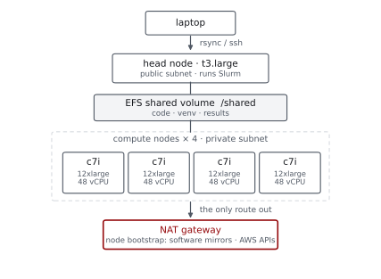
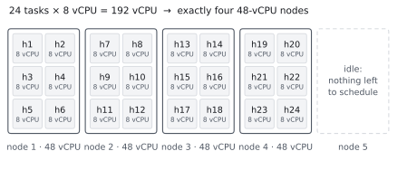
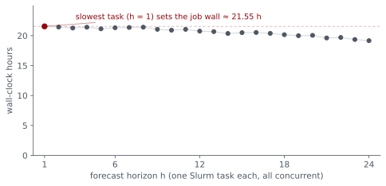
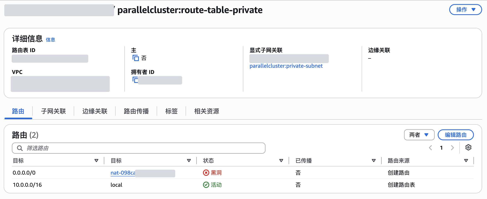
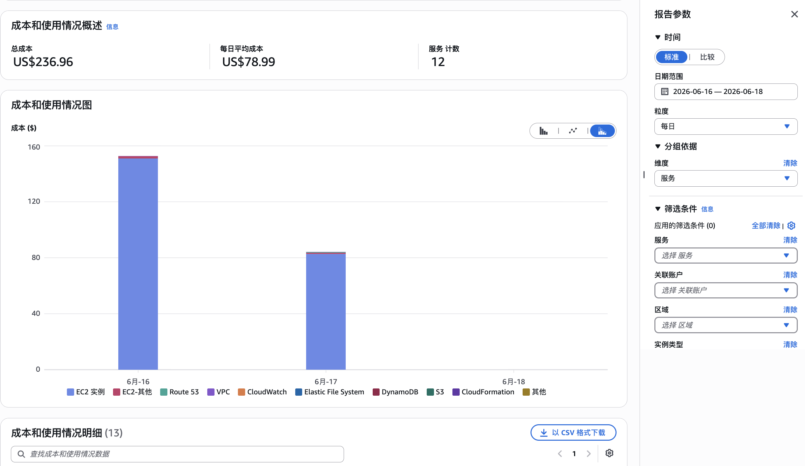
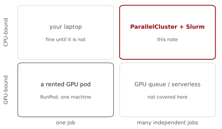

Research Computing on AWS
A field note on ParallelCluster, Slurm, and the traps between them
This summer I moved the heavy compute of a forecasting paper of mine onto AWS. This note records the setup that worked and the traps that cost time or money. It is not about the paper: everything below is about the computing pattern, which transfers to any project whose jobs look like “the same script, many times, with different arguments.” All timings and dollar figures come from the run logs, a benchmark record kept at the time, and the EC2 instance records.
Why the cloud
The workload was hyperparameter tuning for gradient-boosted trees, done separately for each forecast horizon from 1 to 24, where every candidate in the grid is refit over hundreds of rolling origins. The 24 horizons never talk to each other, so the job is embarrassingly parallel: what I needed was not a bigger computer but many ordinary ones, started together and thrown away after.
The routine tuning grid takes tens of minutes per horizon on eight vCPUs, about a day if run sequentially on a laptop. The real problem was a denser robustness grid in mid-June. Folding the EC2 instance records into vCPU terms, that run came to about 5,300 vCPU-hours (111 node-hours × 48 vCPU). Even granting my laptop’s eight logical cores the same per-core speed, running around the clock, that is nearly 28 days.
Why ParallelCluster + Slurm
I considered two other routes. Bare EC2 is the most direct, but it means hand-writing node startup, task dispatch, retry, and teardown: a part-time job as a scheduler. Managed ML platforms center on “training jobs” and want your code repackaged into their entry points and storage conventions; my scripts were already plain “command-line arguments in, files out,” so the script body needed no changes, only a Slurm submission file.
I settled on AWS ParallelCluster: one YAML file describes a head node, a compute queue, and a shared filesystem; one command assembles the whole thing in about ten minutes; and what you get is a standard Slurm queue, so sbatch and squeue work the way they always have. Moving back to a campus cluster later, the script body typically stays intact; what changes is environment configuration, the partition, account, modules, and file paths.
The cluster

The lines of the config that actually shape the experience (ParallelCluster 3.15, us-east-1):
Scheduling:
Scheduler: slurm
SlurmSettings:
ScaledownIdletime: 2 # idle nodes terminate after 2 min
SlurmQueues:
- Name: cpu
CapacityType: ONDEMAND
AllocationStrategy: lowest-price
ComputeResources:
- Name: cpu48
Instances:
- InstanceType: c7a.12xlarge
- InstanceType: c7i.12xlarge
MinCount: 0
MaxCount: 4The two-type pool lets EC2 Fleet order the candidates by price and try the cheaper one first; it is a preference, not a guarantee. The June run happened to land on c7i.12xlarge throughout, so the diagram and the cost table below are stated in c7i terms.
Three configuration choices that mattered later:
MinCount: 0means precisely “keep no compute nodes when there is no work”; with the two-minute scale-down, nodes vanish on their own after a job. It does not mean an idle cluster is free: the head node, the shared volume, and a NAT left up keep billing.- Do not starve the head node. My first attempt used a t3.small and the dependency install ran out of memory; t3.large ended the problem.
- Instance generations are not cosmetic: on my XGBoost tasks, the same batch ran about 20% slower on previous-generation c6i than on c7i at nearly the same hourly price, so the pool holds current-generation types only.
One question worth answering before it is asked: the tasks are restartable, so why on-demand rather than the cheaper spot capacity? On the dense grid a single horizon runs about 20 hours and writes its output only at the end, so a reclaimed node loses the whole task, and I had no per-task checkpointing; for a first production run I also wanted a predictable finish time. And I had not set up the extra IAM piece spot requires (the service-linked role), which removed any temptation to improvise. If the grid were split into many shorter tasks, spot would be the better call.
One full run
Compressed, a run has six beats:
- Bring up the NAT gateway (see the traps), then create the cluster. About ten minutes.
rsyncthe code and the few input files it needs to the shared volume. Never the virtualenv, never data the run will not touch.- Build the environment once on the shared volume (
uv sync). Compute nodessourceit and need no project dependencies installed locally. - Smoke-test a single task (
sbatch --array=1), read its log, and only then submit the full array. - Pull the results back with
rsync. - Delete the cluster, take the NAT down.
Steps 5 and 6 are in that order on purpose.
The full submission is an ordinary Slurm array, one task per horizon:
#SBATCH --array=1-24%24 # up to 24 tasks concurrent
#SBATCH --cpus-per-task=8 # reserves 8 vCPU per task
source .venv/bin/activate
python code/run_forecast.py --horizon "${SLURM_ARRAY_TASK_ID}"Each task requests 8 vCPU, so the full array needs 24 × 8 = 192 vCPU, exactly four 48-vCPU nodes at six tasks each. One easy misunderstanding: --cpus-per-task=8 only reserves the vCPUs; the program will not use them by itself. The code has to read SLURM_CPUS_PER_TASK explicitly (my script passes it to XGBoost’s nthread).

Once four nodes are up, all 24 horizons are already running, so adding a fifth node cannot shorten the pass. Adding threads per task buys little either: the per-fit data is small enough that a single fit saturates around eight threads. What the measured 796% utilization (of an 800% ceiling) does show is that the packing wasted almost nothing. Four nodes are the saturation point for this task split; going faster means making the single task faster, or splitting the grid into more, shorter tasks.

The traps
The NAT blackhole. Compute nodes live in a private subnet; during boot they need outbound access (software mirrors, AWS’s own APIs), which flows through a NAT gateway. A NAT costs about a dollar a day, so between runs I delete it. But the subnet’s route table still points at the deleted NAT, the route becomes a blackhole, and the next cluster’s nodes hang in CONFIGURING; nothing in the status output or logs I was checking pointed anywhere near the cause. In July this bit me even though my own runbook said “NAT up before the cluster”: I worked from memory, skipped the line, and watched a node sit in CONFIGURING for 36 minutes, get replaced, and the replacement sit for another 36. While writing this note I queried the route table again; the last teardown had left the default route in place, state and all (output excerpt):
$ aws ec2 describe-route-tables --region us-east-1 \
--query 'RouteTables[].Routes[?State==`blackhole`]'
{
"DestinationCidrBlock": "0.0.0.0/0",
"NatGatewayId": "nat-098c…",
"State": "blackhole"
}I now manage the NAT with a small up/down script. Its core, with the route-table lookup and guard rails omitted:
# up: allocate an EIP, create the NAT, point the default route at it
EIP_ALLOC_ID=$(aws ec2 allocate-address --domain vpc \
--query AllocationId --output text)
NAT_ID=$(aws ec2 create-nat-gateway --subnet-id "$PUBLIC_SUBNET" \
--allocation-id "$EIP_ALLOC_ID" \
--query NatGateway.NatGatewayId --output text)
aws ec2 wait nat-gateway-available --nat-gateway-ids "$NAT_ID"
aws ec2 replace-route --route-table-id "$RTB" \
--destination-cidr-block 0.0.0.0/0 --nat-gateway-id "$NAT_ID"
# down: delete the NAT, wait, then release the address
aws ec2 delete-nat-gateway --nat-gateway-id "$NAT_ID"
aws ec2 wait nat-gateway-deleted --nat-gateway-ids "$NAT_ID"
aws ec2 release-address --allocation-id "$EIP_ALLOC_ID"Releasing the address is the step people miss. AWS now bills every public IPv4 address by the hour, attached or not, about $0.005 per hour or $3.6 per month; a deleted NAT strands its Elastic IP, and forgetting to release it just keeps that meter going.

The most dangerous default. In my configuration the shared EFS volume is part of the cluster and is deleted with it, the default DeletionPolicy: Delete. It can be set to Retain instead; I chose not to, preferring a clean site per run with the local copy as ground truth over a standing cloud volume that bills monthly and might hold the only copy of something. The price of that choice is discipline: retrieve first, tear down second, every time.
Quotas. A fresh account’s on-demand vCPU quota is far below four 48-vCPU nodes. Check Service Quotas and request the raise days before the deadline run, not the night of.
Failed bootstraps still bill. Instances bill from launch whether or not they ever join the queue. The July incident, priced from the instance records:
| Item | Detail | Cost |
|---|---|---|
| Compute idling | two failed bootstraps, one c7i.12xlarge each, 36.1 + 35.9 min | ≈ $2.57 |
| Head node waiting | t3.large, ~2 h of diagnosis and waiting for my manual approval | ≈ $0.17 |
| Total | plus about two hours of schedule slip | ≈ $2.7 |
$2.7 for zero compute. This is what the smoke test is for: make the mistakes on one node, then scale.
What it costs
The June robustness grid was the largest single run. From the benchmark record, at us-east-1 on-demand prices as of June 2026:
| Item | Usage | Rate | Cost |
|---|---|---|---|
| Compute, c7i.12xlarge × 4 | ~111 node-hours | $2.142/h | ≈ $239 |
| Head node, t3.large | ~28.7 h | $0.0832/h | ≈ $2 |
| NAT gateway | ~28.7 h | $0.045/h + data processing | < $2 |
| Public IPv4 (head node + NAT EIP) | 2 × ~28.7 h | $0.005/h each | ≈ $0.29 |
| EFS shared volume | a few GB, metered | < $1 | |
| Total | end to end ~28 h | ≈ $243 |
The NAT’s hourly charge works out to about $1.3; the rest of that line is a small data-processing fee. About 5,300 vCPU-hours, nearly four laptop-weeks of work, done in a day and change for $243. The routine grid is a different order: about an hour per pass, ten dollars or so.

Reading the two tables together, the plainest conclusion is that AWS does not distinguish between a machine that is computing, one that is debugging, and one stuck in bootstrap: a running instance bills every minute at the same rate. On the routine grid a lapse costs a few dollars; with four compute nodes up, letting the same lapse sit for a few hours runs into tens of dollars.
What transfers
The shape that fits: tasks independent of one another, CPU-hungry but data-light, with no chatter between nodes. Batches split by horizon, by bootstrap draw, by simulation seed, by grid point, or by region all qualify. The misfits are just as clear: tasks that need to talk to each other constantly (that is MPI territory); data under compliance or residency constraints (settle the permissions before the architecture); and any case where the campus cluster’s queue is short and its software current, because free is the best price.
The deep-learning side of my work takes the opposite route for the same reason. Training a neural network is one long job on one GPU, so there I rent a single pod on RunPod instead of building a cluster: no scheduler, no NAT, just a machine with an SSH port. The workflow still rhymes with the one above, and I keep it in a pair of small scripts (runpod_scripts): rsync the project to the pod’s /workspace, build the environment once with uv sync, run the entry file inside tmux so the job survives a dropped connection, and mail the results back when it ends.
Side by side, the two setups are the same discipline on opposite topologies:
| ParallelCluster + Slurm | RunPod pod | |
|---|---|---|
| Task shape | many independent CPU tasks | one long GPU job |
| Startup | NAT up + create cluster, ~10 min | rent a pod, about a minute |
| Environment | uv sync once, on the shared volume |
uv sync once, in /workspace |
| Submit | sbatch --array |
entry script inside tmux |
| Billing unit | per node-hour, 4 nodes + head + NAT | per GPU-hour, metered by the second |
| Shutdown | results out → delete cluster → NAT down | results mailed out → kill the pod |

For price anchors, RunPod’s posted on-demand rates as of August 2026: an RTX 4090 is $0.69 per hour, an 80 GB A100 about $1.4–1.5, an H100 about $2.9–3.2. So an H100 rents for a bit more per hour than one entire 48-vCPU compute node, and a 4090 for about a third of one. And one detail of RunPod’s pricing encodes this note’s whole moral better than I could: a pod’s volume disk bills at $0.10 per GB-month while the pod runs and $0.20 once it stops. Storage attached to a machine that does nothing costs double. Retrieve your results, kill the machine.
The checklist I now run
The discipline that matters is not hunting for cheap instances; it is turning things off.
Before a run:
- NAT up? The default route must point at a live gateway.
- Quota enough? Service Quotas approvals take days, not minutes.
- Smoke test passed? One task, a few minutes, caps the cost of a config mistake at one node.
After a run:
- Results
rsync’d back? - Cluster fully deleted? Wait for the delete to actually finish.
- NAT down, Elastic IP released?
The checklist is boring, and it is also the conclusion: correct compute turned out cheaper than I expected, every wasted dollar maps to one specific mistake, and the meter only ever spun uselessly on mine. The checklist exists to keep it still.